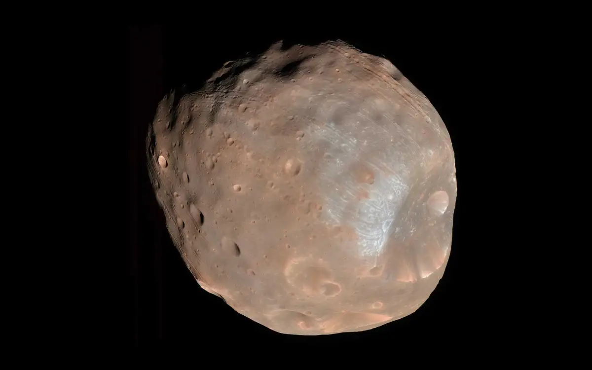
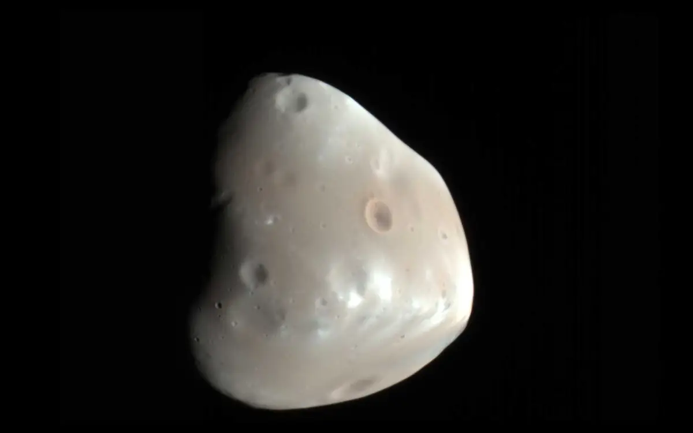

Mars
Mars — the fourth planet from the Sun — is a dusty, cold, desert world with a very thin atmosphere. This dynamic planet has seasons, polar ice caps, extinct volcanoes, canyons, and weather
Mars is no place for the faint-hearted. It’s dry, rocky, and bitter cold. The fourth planet from the Sun, Mars is one of Earth's two closest planetary neighbors (Venus is the other). Mars is one of the easiest planets to spot in the night sky — it looks like a bright red point of light. Despite being inhospitable to humans, robotic explorers — like NASA's Perseverance rover and Mars Reconnaissance Orbiter — serve as pathfinders to eventually get astronauts to the surface of the Red Planet.
Moon
Mars has two small moons, Phobos and Deimos, that may be captured asteroids. They're potato-shaped because they have too little mass for gravity to make them spherical. The moons get their names from the horses that pulled the chariot of the Greek god of war, Ares (whose Roman counterpart is Mars)..

Phobos, the innermost and larger moon, is heavily cratered, with deep grooves on its surface. It is slowly moving towards Mars and will crash into the planet or break apart in about 50 million years.Deimos is about half as big as Phobos and orbits two and a half times farther away from Mars. Oddly-shaped Deimos is covered in loose dirt that often fills the craters on its surface, making it appear smoother than pockmarked Phobos.
